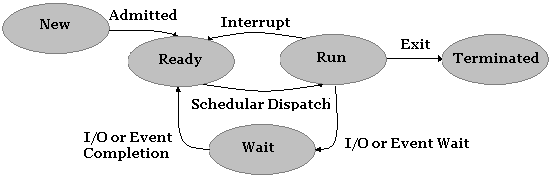
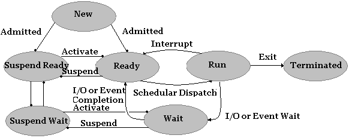
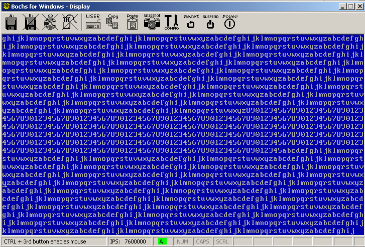
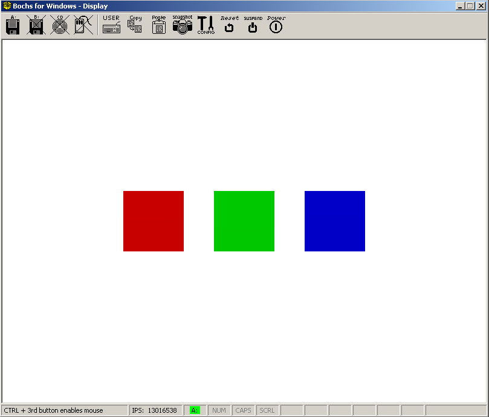

Process Management 2
Introduction
Welcome!
In the previous chapter we detailed basic process management topics, including Inter-Process Communication (IPC), protection, resource allocation, Process Control Block (PCB), process execution states, and process address spaces. We have also detailed single tasking support and implementing basic single tasking. This chapter is a continuation of the previous chapter and will go into more detail of the respective topics; with emphasis on multitasking, scheduling, security, and mutual exclusion. In particular, we will cover:
- Multithreading;
- Multitasking;
- Init and Idle Process;
- Kernel/User Shared Data Space;
- Mutual exclusion and Semaphores;
- Introduction to Concurrent programming;
- Scheduling algorithms;
- Introducing to the MP Standard.
We will assume that you have read the previous chapter and so this chapter will be more advanced; focusing on real world designs and implementations. Like the previous chapter, we will first dive into the theory behind these topics and then present a demo that will implement complete multi-threading in user land processes. Also note that we only provide a brief introduction to the MP standard; we may cover it in more detail in a later article. Implementing MP support requires proper support for the APIC which is an advanced topic.
Process State Management
We already talked a lot about processes throughout the series so this will just be a review of process states and process creation. In the previous chapter we implemented a function for creating a process. We will be modifying it in the accompanying demo to create a new task for the process so that it can be properly executed. We need to review state management since it ties closely with the scheduling of processes.
The state of the process is the current activity employed by the process. At a minimum, the process can be created, executed, ready to be executed, and terminated. Already this gives us four possible states:
- New. The process is being created.
- Running. The process is executing.
- Ready. The process is ready to be executed.
- Terminated. The process has completed.
This is a good start. However we can do better then this. Let's say that we have some process running, and the process sends a request to read a large file from the disk. However, in a system with multiple processes, the disk may be busy handling the request from that process. Our process needs to Wait until the Input/Output Request can be completed. For another example, let's say that we have two processes, but they communicate with each other through signals. A process would need to Wait for a signal to be raised. This would be our fifth state:
- Wait. The process is waiting to complete an I/O request, exception, or signal.
Putting everything together, a process goes through the following states.

The above diagram illustrates the current state model. New processes are admitted into the system Ready queue. When the Scheduler dispatcher selects the process to run, the process enters the Run state. From here, the process may take any number of state changes. If an interrupt or exception fires, the Scheduler Dispatcher may need to switch to another process which involves moving our process back into the Ready queue. If, instead our process tries to read from a file, the process will initiate the I/O request and be placed on the Wait queue until the request is completed. When the I/O request is satisfied, the process will be placed back into the Ready queue to be selected by the Scheduler dispatcher again. Finally, at any time while running the process terminates, it will be terminated.
Sometimes it might be helpful to suspend a process. This involves taking the process out of memory and storing its state on the disk. This is specifically useful when freeing up system resources and allows other processes with higher priority to run. This requires, at a minimum, two more states:
- Suspend Ready
- Suspend Wait
Adding these to our previous diagram, we have the following.

Processes in the Ready or Wait state may be Suspended depending on the resource demand of the system. There can be many more states that you can add to this depending on your design needs, however for most general purpose operating systems, the above state diagram would suffice.
For our purposes, we will only be concerned with the Ready, Run, and Terminated states. However we may also implement the Wait state to properly support the sleep function in the accompanying demo.
Concurrent Programming
So we looked at process states and state management and process creation. We have also dived deep into a process in memory with the previous chapter. The final topic that we need to dive into is multitasking. The heart of multitasking is the Scheduler dispatcher which we will cover in the next section. The Scheduler dispatcher is responsible for moving processes between states and schedule processes for execution. This is why we covered those first – we will be using them in that section later on. Before moving on to the scheduler however, we need to take a closer look at what happens with multitasking when there are multiple threads of execution. When two threads or processes run concurrently and share some data with each other, it becomes critical to synchronize the activities between the two threads of execution.
Concurrency means that the current state of the process is not known. When multiple processes run along side each other and share data with each other, they are said to be running concurrently. Concurrent programming defines the set of techniques used to synchronize access to shared resources between concurrent processes or threads.
Critical Section Problem
On single core systems, the operating system will allocate a small amount of time for execution for each process. The system switches rapidly between the different processes running concurrently. Processes may be interrupted at any time. In addition, systems that support parallel execution may execute instructions from different processes at the same time.
To see the problem of current programming, consider two processes with the following instructions.
Process A:
mov eax, [count]
inc eax
mov [count], eax
Process B
mov ebx, [count]
dec ebx
mov [count], ebx
If we are to execute these processes concurrently, they would be interleaved in some order when the scheduler switches between the two processes. There are many different ways the processes may be interleaved, one way might be:
mov eax, [count]
inc eax
mov ebx, [count]
dec ebx
mov [count], eax
mov [count], ebx
If count is shared between the two different processes, you might notice a big problem here. Because there is no control over the order of execution, we cannot insure that the value of count is valid because we may get different results depending on when the scheduler decides to switch between the two processes. The outcome depends on who reads and writes the variable first. What we have is a race condition.
To combat the race condition, we need to guard the variable while it is being used by another process. We need to synchronize the two processes in some way. This is a part of the critical section problem.
The problem is compounded on systems with multiple processors since the current execution state and current instruction streams are interleaved while executing a single process.
The Problem.
We need a method to control synchronization of a process that executes concurrently. When a critical section request is made, we must insure that only one processor executes the code within the critical section until it completes. Farther, we must insure that other processes and threads do not execute while we enter the critical section.
The Criteria.
- Mutual Exclusion. When a process is executing in a critical section, no other process is executing in a critical section.
- Progress. Processes do not wait indefinitely to enter their critical section.
- Bounded Waiting. The amount of time between making the request to enter its critical section and actually entering it must be bounded.
Semaphores
Sow how do we implement mutual exclusion? We need some form of cooperation between the two processes. If process A is operating on a shared resource, and process B needs access to it, we want process B to wait. However, once process A is done with the resource, we want it to signal that Process B can now use that resource. Thus only one process can ever use the shared recourse at any given time. This is mutual exclusion.
What we can do is introduce another variable to keep track of whether or not the resource is currently being used or not. This variable is called a lock. We can then use this lock to keep track of the other resource.
- If the lock is 1, the resource is in use by some other process.
- If the lock is 0, the resource is free for use.
This type of lock has a special name. It is called a mutex. The mutex has only two values and is also called a binary semaphore. Recall what we need to do: we need one process to wait and the other process to signal. These are the basic functions we will be using throughout this chapter.
atomic Wait (Semaphore S) {
while (S <= 0)
Place process on S.Queue and block.
S--;
}
atomic Signal (Semaphore S) {
S++;
}
The mutex is just a *binary semaphore _with values of 0 or 1 only. Semaphores are generalized locks and are not restricted (that is, whereas the mutex only has two values, general semaphores do not.) Also notice the atomic keyword in the above code. This implies that the code will never be interrupted when it is executed. That is, it is guaranteed to run as a block of code on a single processor in the correct order. They are to be treated as a single unit (hence are called atomic operations.)
Unfortunately, it isn't quite as simple as what we shown above. Atomic operations are hardware dependent and so we need some assistance from the processor to make it work. More specifically, we need to make use of the LOCK instruction prefix. We will discuss this in more detail later as we implement these primitives into actual code.
For now, we believe that it is best to see some examples of using semaphores since they can be difficult when first introduced. It is important to get some practice with using them since you will be using them a lot if you ever plan to completely support multiprocessing.
Example: We opened up this section by showing how the instruction flow can get interleaved as we swap between different processes. The problem was that both of the processes can be executed at any time, and because they share a resource, there was no way to verify the integrity of the resource. We can fix that with semaphores. Assuming count is a global variable that is shared by two processes, we can use semaphores to synchronize access to it. Note that signal and wait are atomic operations.
Process A:
count++;
signal (s);
Process B:
wait (s);
count--;
signal (s);
Spinlocks
Mutual exclusion is the first criteria for a solution to the critical section problem. This means that, when one process enters a critical section, no other processes can enter a critical section. To implement this functionality, we need some method of implementing an atomic operation that can guarantee mutual exclusion. One idea is to use a simple variable to act as a lock. If the lock is 1, some process is inside of the critical section. So the first idea is,
int lock=0;
Process A:
while(1) {
if (!lock)
lock = 1;
do_something();
lock=0;
}
Process B:
while(1) {
if (!lock)
lock = 1;
do_something();
lock=0;
}
Pretty simple. The lock starts at 0, so whatever process runs first will detect this and set the lock. When its done, it releases the lock so the second process can now use it. This would work somewhat, but there is still a big problem. Let's say that process A detects that the lock is 0 but gets interrupted by process B before process A has a chance to set the lock. So process B detects the lock is also 0 and now sets it. So if process B gets interrupted somewhere in do_something, process A will continue executing – as if the lock was still 0! And so both processes can still enter the same critical section (in this example, the critical section is the call to do_something) at the same time if the processes get interrupted when trying to read and lock the lock variable itself. This seems like a small error, but it can quickly propagate and will happen quite a lot.
So the problem here is that we cannot guarantee that accessing and setting the lock can be done without getting interrupted. The operation is not atomic.
To be able to visualize what can happen without actual atomic operations, let's say that we have two threads. The first thread displays characters a-z and the second thread displays numbers 0-9. They run concurrently using the scheduler that we develop later on. Here are the threads,
Process A:
void task_1() {
char c='a';
while(1) {
DebugPutc(c++);
if (c>'z') c='a';
}
}
Process B:
void task_1() {
char c='0';
while(1) {
DebugPutc(c++);
if (c>'9') c='0';
}
}
As these two tasks run concurrently, the output will become an interleaved mess. The reason is that both processes are reading and writing from shared resources without care. Even if we were to introduce a lock as we discussed above, the output wouldn't be much better. In this example, the shared resources are video memory and the global variables used by DebugPutc which is responsible for cursor positioning and scrolling. As one process reads the current x or y position or prepares to scroll, it may be interrupted and the position and other global variables can be mangled without the first process ever knowing.

Sample without semaphores. Notice how the output is a mess.
So to fix this, we need something more then a simple lock. Our direction is good – but we need hardware support. If there was a method to make it so that we can test and set a lock variable in one single operation with the guarantee that it will never be interrupted (so it is atomic) we can finally satisfy the mutual exclusion criteria.
One such hardware primitive is the LOCK instruction prefix. This prefix locks the system bus from reads and writes while the instruction is being performed. Because the data bus is locked, it is guaranteed to be atomic. So a simple LOCK XCHG or LOCK BTS can be used when setting and testing a lock variable. For example,
inline void acquire(int* lock) {
_asm{
mov eax,[lock]
a: lock bts [eax], 0
pause
jc a
}
}
inline void release(int* lock) {
_asm{
mov eax, [lock]
mov [eax], 0
}
}
We can now call these functions from to acquire and release the lock.
Process A:
void task_1() {
char c='a';
while(1) {
acquire(lock);
DebugPutc(c++);
release(lock);
if (c>'z') c='a';
}
}
Process B:
void task_2() {
char c='a';
while(1) {
acquire(lock);
DebugPutc(c++);
release(lock);
if (c>'z') c='a';
}
}
And we get the desired result.

Running Sample with spinlocks. Note how the display is now nicely in order.
Classic Concurrency Problems
Producer / Consumer Problem (Bounded Buffer Problem)
This is the first classic concurrency problem we will look at. Suppose that we have two independent processes, one called the producer and the other called the consumer. Let's also assume that there is a shared buffer being used by both of the processes. The producer is responsible for putting data into the buffer and the consumer is responsible for taking data out. This is the basic setup for the classic Producer/Consumer Problem also known as the Bounded Buffer Problem. The problem is that we need to make sure that the producer does not add data to the buffer if its already full and the consumer does not try to remove data from a buffer that is empty. The problem gets more interesting when there are multiple producers and consumers.
Example: This is a solution to the Bounded Buffer problem. This assumes a single producer and consumer running concurrently.
Semaphore c = 0;
Semaphore s = BUFFER_SIZE;
Producer:
while (true) {
item = produce ();
wait(s);
write(item);
signal(c);
}
Consumer:
while (true) {
wait(c);
item = read();
signal(s);
consume(item);
}
Readers / Writers Problem
The classic Readers/Writers problem is when an object is shared among many processes such that there are two types of processes – readers and writers. Readers read the shared data but never modify it. Writers can read data and modify it. Many readers may read the data concurrently.
Example: There are many different solutions and versions of this problem, this is one of them. Note that we use two semaphores here so that we can allow multiple readers at the same time.
Semaphore c = 1;
Semaphore s = 1;
int count = 0;
Writer:
while (true) {
wait(c);
write();
signal(c);
}
Reader:
while(true) {
wait(s);
count++;
if (count == 0)
wait(c);
signal(s);
read();
wait(s);
count--;
if (count == 0)
signal(c);
signal(s);
}
Inter-Process Communication
Inter-Process Communication (IPC) is the technique supported by operating systems that permit processes to signal and share data with other running processes. There are many different types of techniques for implementing IPC protocols, we will introduce some of the most commonly used ones here.
Pipes
Pipes are a basic technique that uses a circular buffer to store the data between a producer and consumer. The producer writes data to the buffer and the consumer reads from it. There can be multiple producers and consumers of the data. There are two types of pipes, anonymous pipes and named pipes. Named pipes are given a name and appear as a file object in the virtual file system. Any process in the system can open named pipes. Anonymous pipes can only be opened by child processes that inherit it from the parent.
The operating system must provide functionality for storing the data stream that is shared between the consumers and producers, reading and writing the stream, and blocking processes that attempt to read from the pipe when there is no data to read. The operating system must synchronize the reading and writing using the mutual exclusion techniques that we discussed above. This is usually done using a First-In-First-Out (FIFO) circular buffer and using semaphores to synchronize access to it when reading and writing it.
Pipes are file system objects. When you Open a pipe, you will get a File Descriptor pointer back. So you can use the file Read and Write methods to read and write to the pipe as if it were a file. Open file handles are inherited by child processes, and so pipes are also inherited.
Pipes can be managed just like file system descriptors. The Process Parameter Block stores a pointer to a Process Handle Table that stored all open references to file descriptors, pipes, and other system objects. They can also be trivial to implement on systems that already support device files.
Message Passing
The basic idea is simple enough – a producer sends a message and a consumer takes it. There might be additional problems depending on if we want to support synchronized or asynchronous message passing. We also must think about how to store the messages, where they should be managed, the format of the messages, and how to verify that messages are delivered in the expected format to the expected process.
So, what exactly is a message? Messages are whatever the process wants it to be. The consumer and producer must agree on some type of protocol for how to interpret the message. They both need to know the data structure of the message. From the operating system side, the OS does not care about the format of the data – unless its an OS defined message which is typical of microkernels.
The operating system needs to implement support to Send and Receive messages at a minimum.
Synchronous Message Passing
For Synchronous message passing, we need at a minimum two functions. Assuming J and K are process identifiers (PID)'s,
- send(J, message)
- receive(K, &message)
The producer calls send to post a message. With synchronous message passing, the producer gets put in the suspended queue until J calls receive to get the message. When J calls receive, the operating system can copy the message sent to J directly and resume J. The operating system can then put the producer back on the waiting queue so that it can be executed by the scheduler. Synchronous message passing does not require a message queue since only one (the producer or consumer) will ever be running at the same time (the other would be suspended or waiting.)
Asynchronous Message Passing
Asynchronous message passing also needs a minimum of two functions,
- send(J, message)
- receive(K, &message)
The producer calls send to post a message and the consumer calls receive to obtain the message. With asynchronous message passing, the operating system maintains a message queue per process. Producers can send messages at any time and will not be suspended. Messages are copied to the end of the message queue. The consumer can then receive the message from the front of the message queue. The message queue itself is allocated in kernel memory; a dedicated pointer in the Process Control Block points to the queue.
We now have an interesting question. With synchronous message passing, when the process calls receive and there is no process that sent any message, the process gets suspended until another process calls send. With asynchronous message passing, we have two options:
- We can suspend the process that called receive or,
- We can have receive return a status code and just continue running the current process.
It turns out that the better approach is to offer a few more functions,
- send(process, message)
- receive(process, &message)
- sendrec(process, &message)
- notify(process, message)
Shared Memory
When we map the same physical frames into the virtual address spaces of two or more processes, it is shared among those processes. Both processes would be able to read or write to the same pages (depending on the security attributes set when mapping pages. (For example, you can map the physical frames as read/write for process A but as read-only for process B.) Operating systems typically provide support of shared memory through memory mapped files. Under Windows, for example, you would first call CreateFile or OpenFile on a named memory mapped file object followed by MapViewOfFile which maps the region of memory into the process address space and returns a pointer to it.
Scheduling
The scheduler is responsible for the allocation of system resources. System resources include the CPU, memory, and system devices. There are typically many schedulers, however they tend to fall under three categories: short term, medium term, and long term.
- Long term schedulers are responsible for admitting processes into the system and terminating them.
- Medium term schedulers are responsible for suspending and resuming processes.
- Short term schedulers are responsible for allocating CPU time and dispatching processes.
We will be primarily discussing the short term scheduler in this section since it is a core component to implementing a multitasking system. So, our goal here for the demo is to create a short term scheduler.
Scheduling Algorithms
There are many different algorithms that we can use, some more complicated then others. While we will provide an introduction to the more common algorithms, we will be sticking with the Round Robin approach to keep the demo simple.
First Come First Serve
In First Come First Serve (FCFS), jobs are executed as they come. The algorithm is as simple as its name implies; the scheduler selects the first job and lets it run. Then the second. Then the next, and so on. The algorithm cycles through the jobs in the Ready Queue in the order that they came in. New jobs are not started until the previous one terminates. It is not very well suitable for preemptive multitasking.
Example: In the following example, P1 arrives at time 0, P2 arrives at time 1, and P3 arrives at time 2. these processes are placed in the Ready queue to be executed. P1 is the first job, so the algorithm selects it to be run. P2 is selected next, but only after P1 is completed. P2 does not get selected until time=5.
| Process | Arrive | Run time | Service time |
|---|---|---|---|
| P1 | 0 | 5 | 0 |
| P2 | 1 | 3 | 5 |
| P3 | 2 | 8 | 8 |
Shortest Job First
In the Shortest Job First (SJF) algorithm, the system must have a way to know the amount of time necessary for each job to execute. The algorithm selects the next job from the Ready Queue to execute that has the smallest time delta. This algorithm suffers from the problem of process starvation. Jobs can be left in the Ready Queue when jobs of smaller time deltas are given priority. Since this example is very similar to the FCFS algorithm discussed above and is almost never implemented in practice due to its requirement of calculating time deltas (your software needs to be an oracle to know beforehand how long processes will execute) we do not think another example is needed.
Priority Queue
The system can assign each job a priority number. Jobs with higher priority are then selected first. This is the basic idea behind priority scheduling algorithms. How priority is determined is up to the designer. Similarly, how to handle the case when two priority are the same is up to the designer. One idea is to have a default priority and make it user adjustable. When two priorities are the same, we can use FCFS or SJF to decide which one to use. Another idea is to calculate priorities based on a protocol. The protocol could be assigned by a system administrator or calculated using some measurement of system resources and memory constraints. It is more often common to see priorities used alongside other scheduling algorithms as we will see later on.
To summarize though, just select the job from the Ready Queue that has the highest priority. Like with SJF, this algorithm suffers from process starvation since processes with higher priorities can starve out processes with lower priorities.
Round Robin
The system gives each process a time slice to run called a quantum. The system then preempts the currently executing process to allow another process to run. Processes are selected in the order that they appear in the Ready Queue. Because all processes are allowed to run, this algorithm does not starve any processes. The system is responsible for context swapping in order to save and restore the execution state of processes as they are selected to run. We will cover context swapping later when we cover multitasking.
Example: Given processes P1, P2, P3 and a time quantum of 5, the Round Robin (RR) algorithm first selects P1 to run. After the quantum time is up, the system preempts P1. P1 is moved to the back of the Ready Queue. The system saves the context of P1. The algorithm selects P2 and the system performs a context switch. P2 can now execute.
| Process | P1 | P2 | P3 | P1 | P2 | P3 |
|---|---|---|---|---|---|---|
| Quantum=5 | 0 | 5 | 10 | 15 | 20 | 25 |
Multilevel Queue
Instead of using one Ready Queue to decide what to run next, why not use multiple? The idea is that we can get the both worlds of privileged levels and another scheduling algorithm by combining them into a multilevel queue.
The basic idea is that we would have multiple queues. And these queues are for different priorities. For example, if you have 5 priority levels, you would have 5 queues. The algorithm would first select a job to run based on priority from the highest priority queue. If the queue has multiple jobs in it, it uses another algorithm (like RR) to decide what to run. You can also use different scheduling algorithms for the different priority queues. This algorithm has the potential for starving processes however for the same reason priority scheduling does. So we have a great algorithm here, but what can we do to prevent starving processes?
Multilevel Feedback Queue
The Multilevel Feedback Queue is a modification of the multilevel queue to prevent process starvation. The problem with the multilevel queue was that, when a process of some priority L is inserted into queue L, we can starve the process by just submitting new jobs where the priority is greater than L. To prevent this, what we can do is change the priority of the process. So we can move processes from one priority queue into another.
In our example above, the process with priority L would be moved to a higher priority queue after some time passes. This will continue until the process reaches the highest priority queue. Thus the process is never starved out. We can also lower the priority of jobs by moving them into lower priority queues which might be useful when important system tasks need to run. The difficulty of implementing multilevel feedback queues is determining when processes should be moved. This is the most common algorithm in use by modern operating systems today.
Example: The following is an example of a multilevel queue. Here we have three queues, system processes have the highest priority and applications have the lowest priority. Different scheduling algorithms can be used on each of the different queues to select jobs from them. The scheduler selects the highest priority non-empty queue. It then uses another algorithm (such as FCFS or RR) to select a job from that queue. In multilevel feedback queues, the system can move processes between different queues. For example, we can move jobs from L3 then L2 then L1 over time, thereby raising its priority so it can run. Thus no process starvation.
| Queue Level | Priority Queue |
|---|---|
| L1 | System Processes |
| L2 | Batch Jobs |
| L3 | Applications |
Multitasking
We have covered a lot of material throughout this chapter. And at long last, we can finally get to the main focus of this chapter, multitasking. We will be putting everything together into code.
We first covered process state management because the scheduler and multitasking component need to able to select and move processes between different states. For example, the scheduler often needs to switch processes from Ready to Running. If you plan to support more advanced paging techniques (such as page swapping algorithms), you will need to be able to switch processes to and from a Suspended state. The system needs to be able to differentiate between a Suspended process and one that is still in memory awaiting a completion signal. Both processes have a Process Control Block (PCB) and uses system resources, however Suspended processes aren't using memory. We also needed a way to pause processes. We did this by introducing a Wait state. As you can see, state management is a critical component to implementing multitasking. This is why we covered this first.
The next thing we looked at was Process Creation. We looked in more detail about how it is used with state management. In Chapter 24, we implemented a CreateProcess function. Recall, that our function loaded a Portable Executable (PE) image into memory, mapped it into the virtual address space, and executed it in user mode. We will be building off of this function in this section to create a new process, and add it to the Ready queue to be selected by the Scheduler.
Then we looked at an introduction to concurrent programming. Topics included the Critical Section problem, Mutual Exclusion, and Semaphores. Concurrency happens when multiple processes and threads run asynchronously. Concurrent programming provides techniques that we can use to synchronize communication between asynchronous processes. Concurrent programming is hard – there is no right way to go about it. If you use concurrency, you can guarantee that your code has bugs – most of which may never surface for years or decades. We introduced concurrent programming since the topic of this chapter is multitasking. Since shared resources tie close to multitasking (typically in the form of shared libraries, signals, and message passing), we included a brief introduction to it here.
We then looked at an introduction to Inter-Process Communication (IPC). IPC plays a critical role in all but the simplest of operating systems. And systems that support IPC with multitasking require the concurrent programming techniques discussed in this chapter. You have already been using a form of IPC through the use of system calls.
Finally we covered scheduling algorithms. The Scheduler is the heartbeat of the operating system. It is responsible for selecting processes for running and is a core algorithm in the multitasking system.
Now, finally, we will be putting things together as we dive into the world of multitasking operating systems.
As you recall, there are three types of multitasking:
- Preemptive
- Non-Preemptive
- Cooperative
We will focus on preemptive multitasking.
The Plan
We will be using the Round Robin (RR) scheduling algorithm. This algorithm requires us to be able to allocate a quantum as a resource to the process being selected. So we'll need a clock. The system has many different types of clocks:
- Programmable Interval Timer (PIT)
- Advanced Programmable Interrupt Controller (APIC) timer
- Real Time Clock (RTC)
- High Performance Event Timer (HPET)
- etc.
For the purposes of the demo, we will be sticking with the PIT since it has been covered and already supported. So we have our scheduling algorithm and clock that we will be using. In Chapter 24, we introduced the Process Control Block (PCB) and Thread Control Block (TCB). We will expand the TCB to include information needed to store the current thread state and switch from user mode to kernel mode.
typedef struct _thread {
uint32_t esp;
uint32_t ss;
uint32_t kernelEsp;
uint32_t kernelSs;
struct _process* parent;
uint32_t priority;
int state;
ktime_t sleepTimeDelta;
}thread;
We will need some lower level stuff to create the task associated with a thread. The stack stores the current register context. We will be storing the register context on the stack pointed to be the esp field in the above structure. The scheduler is responsible for creating tasks, managing tasks, and switching tasks. We will look at each of these in more detail in the following sections. As always, all sample code is used in the demo program at the end of this chapter.
The Ready Queue
We first need a place to store these tasks. Tasks should be dynamically allocated from a non-paged pool by the kernel memory allocator. However, since the series does not implement a kernel allocator, we are limited to using an array for our implementation. Using a circular queue, we can implement the First-In-First-Out functionality required for Round Robin scheduling. The idea is so that we can move to the next task by simply removing the top element of the queue and pushing it to the back. So the new task would become the top of the queue.
thread _readyQueue [THREAD_MAX];
int _queue_last, _queue_first;
thread _idleThread;
thread* _currentTask;
thread _currentThreadLocal;
/* clear queue. */
void clear_queue() {
_queue_first = 0;
_queue_last = 0;
}
/* insert thread. */
bool queue_insert(thread t) {
_readyQueue[_queue_last % THREAD_MAX] = t;
_queue_last++;
return true;
}
/* remove thread. */
thread queue_remove() {
thread t;
t = _readyQueue[_queue_first % THREAD_MAX];
_queue_first++;
return t;
}
/* get top of queue. */
thread queue_get() {
return _readyQueue[_queue_first % THREAD_MAX];
}
For our example, we only implement a single queue for ready tasks. Tasks can be removed and added at any time by shuffling the queue around. Notice the *currentTask pointer. For Chapter 25, this pointer always points to *currentThreadLocal which stores a local copy of the currently executing thread. Our ISR will use the pointer to save and restore the thread state. We will look at the ISR in the next section.
The Interrupt Service Routine (ISR)
Alright, so our first task is to somehow get the scheduler called whenever a timer even triggered. Recall that hardware interrupts are raised by the Interrupt Controller, in our case, the legacy Programmable Interrupt Controller (PIC). There are of course others (such as Advanced PIC (APIC) used with MultiProcessor (MP) and inter-CPU IRQ's) however we supported the legacy PIC interface only for the series in order to keep things simple. The PIC raises a signal to the CPU when a hardware device sends it to the PIC, such as the IR#0 signal sent from the PIT. The PIC then notifies the CPU by raising another signal, in this case the IRQ line on the CPU. What IRQ that gets called depends on how we programmed the PIC. Recall that we programmed the PIC to map IR#0 to ISR 33. What this means is that, whenever the PIT fires, the CPU stops executing the current code, pushes the return cs, eip, and flags on the current stack, and then calls the ISR that we installed in the Interrupt Descriptor Table (IDT), that is, IDT[33].
In short, we already installed our timer ISR to interrupt vector 33. We did this back when setting up protected mode. It was needed in order for us to enable hardware interrupts. That is fine and all, but what we want to do is override it.
We do this through interrupt chaining. We introduced interrupt chaining in an earlier chapter, however we never really put it into practice. Until now, that is. What we need to do is to get the old ISR, install our own. Lets do that now,
/* register isr */
old_isr = getvect(32);
setvect (32, scheduler_isr, 0x80);
Simple enough. We implemented getvect and setvect back when we talked about the IDT. We install it to IDT[32] because that is where the PIT ISR was. So what this does is save it in old_isr and install a new ISR, scheduler_isr.
So, with the above in mind, every time the PIT fires, scheduler_isr will be called instead. Now for the hard part – writing the ISR. Consider what the ISR needs to do and when it can be called. The ISR can be called at any time. However, it is always called when a task is running. All we need to do is save the current register state and call the scheduler. Do not forget to send the End-Of-Interrupt (EOI) to the PIC.
We will first present the ISR implemented for the demo, and then we will break it piece by piece to cover the details of what its doing below.
__declspec(naked) void _cdecl scheduler_isr () {
_asm {
;
; clear interrupts and save context.
;
cli
pushad
;
; if no current task, just return.
;
mov eax, [_currentTask]
cmp eax, 0
jz interrupt_return
;
; save selectors.
;
push ds
push es
push fs
push gs
;
; switch to kernel segments.
;
mov ax, 0x10
mov ds, ax
mov es, ax
mov fs, ax
mov gs, ax
;
; save esp.
;
mov eax, [_currentTask]
mov [eax], esp
;
; call scheduler.
;
call scheduler_tick
;
; restore esp.
;
mov eax, [_currentTask]
mov esp, [eax]
;
; Call tss_set_stack (kernelSS, kernelESP).
; This code will be needed later for user tasks.
;
push dword ptr [eax+8]
push dword ptr [eax+12]
call tss_set_stack
add esp, 8
;
; send EOI and restore context.
;
pop gs
pop fs
pop es
pop ds
interrupt_return:
;
; test if we need to call old ISR.
;
mov eax, old_isr
cmp eax, 0
jne chain_interrupt
;
; if old_isr is null, send EOI and return.
;
mov al,0x20
out 0x20,al
popad
iretd
;
; if old_isr is valid, jump to it. This calls
; our PIT timer interrupt handler.
;
chain_interrupt:
popad
jmp old_isr
}
}
The ISR is responsible for saving the current register context and saving the stack pointer of the current task. It then calls the scheduler, and restores the stack pointer from the current task and restores the register context that we saved before. Since everything is restored, the task and continue executing without problems when the ISR returns. The ISR appears more complicated then it actually is. Let's take a closer look at it in pieces. Like all of our other ISR's, the very first thing we do is save the current register state in order to preserve them on the stack. So the ISR begins like this:
__declspec(naked) void _cdecl scheduler_isr () {
_asm {
cli
pushad
popad
iretd
}
}
Since we install the ISR on top of the ISR that was installed by the PIT, we need to be very careful here. This means that our scheduler_isr will be called with every clock tick. When we call setvect to install it, the PIT can fire before we have any tasks in the ready queue. When there are no tasks to run, we just want the ISR to return since there is nothing to do. You might also notice that we disable interrupts but never restore them. This is fine. Currently running tasks enable interrupts through the FLAGS register. Since the FLAGS register is preserved in all cases, when we issue IRETD, FLAGS.IF will enable when we return thereby re-enabling interrupts. Our ISR becomes,
__declspec(naked) void _cdecl scheduler_isr () {
_asm {
cli
pushad
;
; if no current task, just return.
;
mov eax, [_currentTask]
cmp eax, 0
jz interrupt_return
;
; <actual ISR code here>
;
interrupt_return:
popad
iretd
}
}
Finally, we need to keep in mind that the PIT hardware is now calling scheduler_isr, so the PIT driver ISR is never being called. We want to chain the interrupt. This means, if there is an old ISR that was installed before us, we want to give it a chance to run. This is done by jumping (not calling) to it. When calling another ISR, we need to keep in mind that the ISR will either chain another interrupt or issue an End-Of-Interrupt (EOI) command to break the chain. When calling another ISR, we are still technically servicing an interrupt, so don't want to send EOI nor do we need an IRETD. However, when not calling another ISR and giving control back to the original process, we need both. So our ISR now becomes:
__declspec(naked) void _cdecl scheduler_isr () {
_asm {
;
; clear interrupts and save context.
;
cli
pushad
;
; if no current task, just return.
;
mov eax, [_currentTask]
cmp eax, 0
jz interrupt_return
;
; <actual ISR code here>
;
interrupt_return:
;
; test if we need to call old ISR.
;
mov eax, old_isr
cmp eax, 0
jne chain_interrupt
;
; if old_isr is null, send EOI and return.
;
mov al,0x20
out 0x20,al
popad
iretd
;
; if old_isr is valid, jump to it. This calls
; our PIT timer interrupt handler.
;
chain_interrupt:
popad
jmp old_isr
}
}
The actual body of the ISR that performs the actual tasking is the following part:
; save selectors.
;
push ds
push es
push fs
push gs
;
; switch to kernel segments.
;
mov ax, 0x10
mov ds, ax
mov es, ax
mov fs, ax
mov gs, ax
;
; save esp.
;
mov eax, [_currentTask]
mov [eax], esp
;
; call scheduler.
;
call scheduler_tick
;
; restore esp.
;
mov eax, [_currentTask]
mov esp, [eax]
;
; Call tss_set_stack (kernelSS, kernelESP).
; This code will be needed later for user tasks.
;
push dword ptr [eax+8]
push dword ptr [eax+12]
call tss_set_stack
add esp, 8
;
; srestore context.
;
pop gs
pop fs
pop es
pop ds
It first pushes segment registers on the stack. (Recall that we did a PUSHAD before this. And the CPU pushed CS, EIP, and EFLAGS on the stack as well when the ISR was first called.) We store these on the stack so that we can save the current thread register context. The order that these registers are pushed on the stack matches the order that we use later in the stackFrame structure. We then set those segment registers to the kernel mode selectors we set up a long time ago from the Global Descriptor Table (GDT). We do this because we are not making the assumption that the currently running task is a kernel mode task. If the task is a user mode task, DS, ES, FS, and GS would still be 0x23 rather then 0x10. We saved the original task selectors on the threads stack, so we can adjust them now. The CPU automatically sets SS and CS for us from the Task State Segment (TSS) when coming from a user mode task, so those would already be set appropriately. We will take a little more closer look at the stacks a little later. Finally, we save the current value of ESP to _currentTask->espand call scheduler_tick.
_currentTaskis assumed by the ISR to always be pointing to whatever the currently running task is. If the scheduler changes tasks, then that new task becomes the new “currently” running task. Even if its a new task, we just restore ESP to that new tasks *currentTask->espfield. Since we initially saved the register context on the new threads stack, we just pop them off back into their respective registers. We also call tss_set_stackthat we implemented a long time ago. This is only useful if the task that we are returning to is a user mode task. What we do is set the new tasks kernel stack into TSS by updating it. For the upcoming demo, we will only be running kernel threads, each with only one kernel stack so this does not apply just yet. However, keep in mind that user level threads have two stacks rather then one, since the threads run in both user space and kernel space. We will be expanding on this farther in the next couple of chapters as we dive into address space management and user space.
So how do we switch tasks? Consider for a moment what would happen if that *currenTask pointer changes when the scheduler is called. Since the register context and stack pointer of this new task was saved the same way, by simply changing this pointer inside of the scheduler_tick function, the ISR would automatically load the new tasks register context and stack. And so, task switching is as simple as updating that pointer.
Switching Tasks
So switching tasks just involves updating a pointer. With Round Robin scheduling, we can use a queue to store the running tasks. Since queues already operate in First-In-First-Out order, all we need to do is remove and reinsert the current task to push it back. This greatly simplifies the code.
/* schedule next task. */
void dispatch () {
/* We do Round Robin here, just remove and insert.
Note _currentTask pointer always points to
_currentThreadLocal. So just update _currentThreadLocal. */
queue_remove();
queue_insert(_currentThreadLocal);
_currentThreadLocal = queue_get();
}
/* gets called for each clock tick. */
void scheduler_tick () {
/* just run dispatcher. */
dispatch();
}
That is all there is to it. The above implements Round Robin scheduling and swaps between the tasks after a certain quantum is up. Tasks are stored in the Ready Queue which was implemented earlier. This only leaves one more thing – task creation.
Although the above works for multiple threads, it will not work for threads belonging to different processes. The typical solution is to compare the current threads parent process with the new one. If they belong to the same process, then the dispatcher can simply return. If they belong to different processes, the dispatcher needs to invoke the VMM to switch to the new process address space. To keep the example code simple, we opted to avoid this for this chapter. However, we will be supporting it in the next chapter or two when we cover address space management in greater detail.
Task Creation
Let's say that our schedule function updates the *currentTask pointer to a different task. So when this function returns back to the ISR, the ISR will set the stack and register context from this new task before issuing IRETD. This works well, but only if the task already has a stack and register context on the stack.
So we need to set it up when creating the task in the first time. So we set up a basic stack frame and set the task esp and eip to the stack and entry point function. The stack frame must be one that is expected by our ISR. When we return back to the ISR, it will POP GS, POP FS, POP ES, POP DS first, then does a PUSHA followed by an IRETD. PUSHA pops EAX, EBX, ECX, EDX, ESI, EDI, ESP, and EBP. And IRETD pops EIP, CS, and FLAGS. So this must be our initial stack frame when the task is created.
typedef struct _stackFrame {
uint32_t gs;
uint32_t fs;
uint32_t es;
uint32_t ds;
uint32_t eax;
uint32_t ebx;
uint32_t ecx;
uint32_t edx;
uint32_t esi;
uint32_t edi;
uint32_t esp;
uint32_t ebp;
uint32_t eip;
uint32_t cs;
uint32_t flags;
}stackFrame;
task task_create (uint32_t entry, uint32_t esp) {
thread t;
stackFrame* frame = ((stackFrame*) esp);
frame->flags = 0x202;
frame->cs = 8;
frame->eip = (uint32_t)entry;
frame->ebp = 0;
frame->esp = 0;
frame->edi = 0;
frame->esi = 0;
frame->edx = 0;
frame->ecx = 0;
frame->ebx = 0;
frame->eax = 0;
frame->ds = 0x10;
frame->es = 0x10;
frame->fs = 0x10;
frame->gs = 0x10;
t.esp = (uint32_t) frame;
t.ss = 0x10;
return t;
}
This works for most tasks, except one – the initial task. The ISR we created will only work if the currently executing code is within a task. It is yet another chicken and egg problem. To get around this, we need to create a special task object and execute it when we are ready to start multitasking.
static thread _idleTask;
void task_execute(thread t) {
_asm{
mov esp, t.esp
pop gs
pop fs
pop es
pop ds
popad
iretd
}
}
/* initialize scheduler. */
void scheduler_initialize(void) {
/* clear ready queue. */
clear_queue();
/* clear process list. */
init_process_list();
/* create idle thread and add it. */
_idleThread = thread_create(idle_task, (uint32_t) create_kernel_stack(), true);
/* set current thread to idle task and add it. */
_currentThreadLocal = _idleThread;
_currentTask = &_currentThreadLocal;
queue_insert(_idleThread);
/* register isr */
old_isr = getvect(32);
setvect (32, scheduler_isr, 0x80);
}
/* idle task. */
void idle_task() {
while(1) _asm pause;
}
The above puts everything together. It creates an idle task, adds it to the queue, installs the ISR, and executes the initial task. When the initial task executes, the ISR will be called whenever the PIT fires to call the scheduler to update the current task if needed.
Introduction to MP
This is a very brief introduction to the Multi-Processor (MP) Specification that is designed to provide a standard interface for starting up the other processors and Inter-Processor Interrupts (IPI). We consider this an advanced topic since it can quickly escalate the difficulty of concurrent programming. Our scheduler only executes one task at a time, however with MP, we can implement a low level scheduler responsible for scheduling independent CPU's for the tasks and can achieve running multiple tasks at the same time. So what we are presenting here is just a very brief introduction – for anyone wanting to dive more into the MP standard, we recommend checking out the MP specification. Your system must already support the IOAPIC, LAPIC, and ICI which are used by MP.
There is symmetric multiprocessing (SMP) and asymmetric multiprocessing (ASP). In SMP, all of the processors are of the same type whereas in ASP they are not. Most systems only support SMP given that ASP systems are very rare in desktop systems. However, the MP standard is applicable to both and gives itself some room for extendability so it can adopt to more diverse machine types and farther allows the operating systems to adopt and configure itself for different types of systems.
When the system first starts up, the hardware selects a Boot-Strap Processor (BSP) to act as the sole processor to start up. The BSP is the first processor to start up and must be the last processor to shut down. The operating system may send a STARTUP IPI from the BSP to another Application Processor (AP) to start it. Other AP's can be started by either the BSP or another AP. The STARTUP IPI (and INIT IPI) is what the operating system sends to wake the other processors.
The operating system must first search for the floating MP Floating Pointer structure in order to detect if the system supports MP. The structure contains the physical address of the MP Configuration Table. The configuration table is read only. It stores the memory mapped address of the Local APIC (LAPC), Processor entries (including the processor LAPIC ID), IOAPIC entries (including IOAPIC base memory mapped address), Buses, and interrupt configuration entries. The operating system must remember the LAPIC ID of the BSP to make sure it is the last one to shut down.
To wake another AP, all we need to do is send a INIT IPI through the BSP LAPIC or another AP LAPIC. The memory mapped registers for the LAPIC's are stored in the processor information in the MP configuration table. We then need to send an STARTUP IPI to that AP to start executing. That's really all there is to it. The INIT IPI causes the AP to reset. The STARTUP IPI causes it to start executing at the location you tell it to in real mode. Operating systems must provide a real mode stub routine for configuring the API's in protected or long modes just as you did for the BSP.
So that is pretty much all we wanted to cover in this brief introduction to multiprocessor systems. Starting up other processors (or processor cores0 is fairly simple and we encourage experimenting with SMP after implementing your scheduler. We may cover MP in more detail in a later tutorial after covering the APIC. We just wanted to give a little overview and direction for those interested in it now.
Demo
Most of the new code has been covered in the above text, we are just preparing the initial release. Assuming no problems arise during stress tests and final integration, the demo should be released sometime within the next week or two.

Demo running in 800x600x32 mode executing three tasks
This is our first real graphical demo. The demo runs three tasks concurrently; each task cycles through a select color in video memory while running to visually show that they are executing. We opted to have a graphical demo rather then text based since we believe we can have it more visually appealing yet still simple to do. It is alright if you did not read through the graphics series yet, we will discuss things here.
Bochs Graphics Adapter (BGA)
To keep the code as simple as possible so we can focus on the primary topic of the chapter, we opted to use BGA under the assumption that the system is configured for ISA. This code is Bochs specific and will not work on real systems. Real systems would require scanning the PCI bus infrastructure which may be a topic in a more advanced chapter.
#define VBE_DISPI_IOPORT_INDEX 0x01CE
#define VBE_DISPI_IOPORT_DATA 0x01CF
#define VBE_DISPI_INDEX_XRES 0x1
#define VBE_DISPI_INDEX_YRES 0x2
#define VBE_DISPI_INDEX_BPP 0x3
#define VBE_DISPI_INDEX_ENABLE 0x4
#define VBE_DISPI_DISABLED 0x00
#define VBE_DISPI_ENABLED 0x01
#define VBE_DISPI_LFB_ENABLED 0x40
void VbeBochsWrite(uint16_t index, uint16_t value) {
outportw (VBE_DISPI_IOPORT_INDEX, index);
outportw (VBE_DISPI_IOPORT_DATA, value);
}
void VbeBochsSetMode (uint16_t xres, uint16_t yres, uint16_t bpp) {
VbeBochsWrite (VBE_DISPI_INDEX_ENABLE, VBE_DISPI_DISABLED);
VbeBochsWrite (VBE_DISPI_INDEX_XRES, xres);
VbeBochsWrite (VBE_DISPI_INDEX_YRES, yres);
VbeBochsWrite (VBE_DISPI_INDEX_BPP, bpp);
VbeBochsWrite (VBE_DISPI_INDEX_ENABLE, VBE_DISPI_ENABLED | VBE_DISPI_LFB_ENABLED);
}
To set the video mode just involves calling VbeBochsSetMode. We use 800x600x32in our example since it appears to be well supported. **The Linear Frame Buffer (LFB)**under ISA is at the predefined location 0xe0000000. However, because we have paging enabled, we need to map the LFB into our virtual address space to use it. We will map it to 0x200000 virtual for the demo. The mapping is done by calculating the size of the LFB in number of pages, and mapping each page by calling our VMM.
void* VbeBochsMapLFB () {
/* BGA LFB is at LFB_PHYSICAL for ISA systems. */
#define LFB_PHYSICAL 0xE0000000
#define LFB_VIRTUAL 0x200000
/* map LFB into current process address space. */
int pfcount = WIDTH*HEIGHT*BYTES_PER_PIXEL/4096;
int c;
for (c = 0;c <= pfcount; c++)
vmmngr_mapPhysicalAddress (vmmngr_get_directory(),LFB_VIRTUAL + c * 0x1000,LFB_PHYSICAL + c * 0x1000, 3);
/* return pointer to LFB. */
return (void*) LFB_VIRTUAL;
}
With the above function, we can now draw to the LFB by writing to 0x200000. To clean up any possible garbage on the display, we clear it next. Since we need to draw a lot of pixels, we try to optimize the function for 32 bit modes. This function makes the screen white.
void fillScreen32 () {
uint32_t* lfb = (uint32_t*) LFB_VIRTUAL;
for (uint32_t c=0; c<WIDTH*HEIGHT; c++)
lfb[c] = 0xffffffff;
}
In 32 Bits Per Pixel modes, the pixel colors are composed of 8 bits for red, 8 bits for green, and 8 bits for blue. The high 8 bits are ignored for our purposes but is typically used as a transparency value. We use three separate tasks to render the three rectangles and cycle through the intensity of the three colors. Since we are going to render to different locations on display, we won't have to worry about concurrency problems here. Although display memory is shared, each task will render to separate parts.
void rect32 (int x, int y, int w, int h, int col) {
uint32_t* lfb = (uint32_t*) LFB_VIRTUAL;
for (uint32_t k = 0; k < h; k++)
for (uint32_t j = 0; j < w; j++)
lfb[(j+x) + (k+y) * WIDTH] = col;
}
void kthread_1() {
int col = 0;
bool dir = true;
while(1) {
rect32(200,250,100,100,col << 16);
if (dir){
if (col++ == 0xfe)
dir=false;
}else
if (col-- == 1)
dir=true;
}
}
void kthread_2 () {
int col = 0;
bool dir = true;
while(1) {
rect32(350,250,100,100,col << 8);
if (dir){
if (col++ == 0xfe)
dir=false;
}else
if (col-- == 1)
dir=true;
}
}
void kthread_3 () {
int col = 0;
bool dir = true;
while(1) {
rect32(500,250,100,100,col);
if (dir) {
if (col++ == 0xfe)
dir=false;
}else
if (col-- == 1)
dir=true;
}
}
Thread Stacks
Typically a thread has two separate stacks. One for when executing in user mode, and another for when executing in kernel mode. Recall that when a thread is executing in user mode, the CPU switches to a kernel stack by getting the esp0and ss0fields of the Task State Segment (TSS). The scheduler is responsible for updating the TSS to the new threads kernel mode stack. However, for chapter 25, since all threads run in kernel space, the TSS will never be referenced. In other words, the threads in chapter 25 only have one stack – a kernel mode stack.
We will be supporting user mode threads within the next two chapters when we cover address space management. We will use our future address space allocator to reserve stack space in user space for each user mode thread. That means threads will have both a user mode and kernel mode stack.
The thread uses the kernel mode stack when executing code with **Current Privilege Level (CPL)**of 0. The CPU automatically loads this if the CPL is less then the **Requested Privilege Level (RPL)**from the TSS. In other words, lets say that our user mode thread is running and the PIT fires. The CPU will then set SS=TSS.ss0and ESP=TSS.esp0. It will then push the return CS and IP on this new stackand call the ISR. When the ISR is done, it executes IRETto return back to the user mode code and stack.
This is why user level threads must have, at a minimum, twoseparate stacks. The first stack must be mapped in kernel space and the other must be mapped in user space so the program can access it while executing. Kernel level threads only need onestack.
Since we don't have an address space allocator, we cannot nicely allocate user mode stacks just yet, so cannot support user level threads (without hacks.) And since we don't have a proper kernel mode allocator yet, we can't nicely support allocation of kernel level stacks either. These will be the topics for the next chapter or two.
So what we decided to do for chapter 25 was to reserve space in kernel memory and allocate each 4k block as its own stack.
void* create_kernel_stack() {
physical_addr p;
virtual_addr location;
void* ret;
/* we are reserving this area for 4k kernel stacks. */
#define KERNEL_STACK_ALLOC_BASE 0xe0000000
/* allocate a 4k frame for the stack. */
p = (physical_addr) pmmngr_alloc_block();
if (!p) return 0;
/* next free 4k memory block. */
location = KERNEL_STACK_ALLOC_BASE + _kernel_stack_index * PAGE_SIZE;
/* map it into kernel space. */
vmmngr_mapPhysicalAddress (vmmngr_get_directory(), location, p, 3);
/* we are returning top of stack. */
ret = (void*) (location + PAGE_SIZE);
/* prepare to allocate next 4k if we get called again. */
_kernel_stack_index++;
/* and return top of stack. */
return ret;
}
Back to Sleep
You might recall that we implemented a very basic sleep function that we needed in order to delay the read operation of the floppy device. Our implementation simply went into a busy loop in order to waste some time. Now we can adopt it for the threading system.
The basic idea is that sleep should pause the thread that called the function. This means we need to adjust the current thread state from READY to BLOCK and force a task switch. The scheduler then needs to keep track of blocked threads to handle them properly. This is typically done via Signals from other operating system components. For example, if a thread is waiting for a device to be ready, it may block. Now the system needs to wait until that thread receives a signal from the driver. Until then, the scheduler should jump to executing other threads. To keep the demo relatively simple, we opted to do things a little differently.
All we need to do is change the state of the currently running program and force a task switch (by calling the ISR directly via int 33.) The scheduler would contain the logic code for checking blocked threads while selecting new threads to run. If the next thread is blocked, we decrement its sleep time delta and awake the thread is the sleep time delta reaches zero.
Although we do not use sleep in this demo, the disk driver code relies on it. So now the thread attempting to read from the disk device can properly sleep.
Main Program
Finally, we will take a look at the main program. In the demo for Chapter 25, we moved the stack into kernel space and readjust it after making a static copy of the boot parameter block that was passed from the boot loader. We then use the services discussed above to set the video mode, initialize the scheduler, and create and add three threads to the ready queue. Since the threads run in kernel space, they only have a kernel stack allocated to them, which we allocate calling create_kernel_stack.
We have also completely rewritten the process creation and management code from Chapter 24 to be compatible with the thread system created in Chapter 25. However, it will not be completed until we support the allocation of user mode stacks which we will do in the upcoming chapters.
void _cdecl kmain (multiboot_info* bootinfo) {
/* store kernel size and copy bootinfo. */
_asm mov word ptr [kernelSize], dx
memcpy(&_bootinfo, bootinfo, sizeof(multiboot_info));
/* adjust stack. */
_asm lea esp, dword ptr [_kernel_stack+8096]
init (&_bootinfo);
/* set video mode and map framebuffer. */
VbeBochsSetMode(WIDTH,HEIGHT,BPP);
VbeBochsMapLFB();
fillScreen32 ();
/* init scheduler. */
scheduler_initialize ();
/* create kernel threads. */
queue_insert (thread_create(kthread_1, (uint32_t) create_kernel_stack(),true));
queue_insert (thread_create(kthread_2, (uint32_t) create_kernel_stack(),true));
queue_insert (thread_create(kthread_3, (uint32_t) create_kernel_stack(),true));
/* execute idle thread. */
execute_idle();
/* this should never get executed. */
for (;;) _asm {cli
hlt};
}
Conclusion
In this chapter we looked at scheduling algorithms, a brief overview of SMP, concurrent programming, and implemented a working preemptive Round Robin scheduler. We have also went through a small introduction to high resolution video modes using Bochs Graphics Adapter (BDA), state management, and an introduction to several IPC techniques.